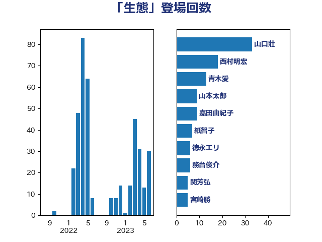

単語「生態」

| 山口壯 | 自由民主党 | 33 回 |
| 西村明宏 | 自由民主党 | 18 回 |
| 青木愛 | 立憲民主党 | 13 回 |
| 山本太郎 | れいわ新選組 | 9 回 |
| 嘉田由紀子 | 無所属 | 9 回 |
| 紙智子 | 日本共産党 | 7 回 |
| 徳永エリ | 立憲民主党 | 6 回 |
| 務台俊介 | 自由民主党 | 6 回 |
| 関芳弘 | 自由民主党 | 5 回 |
| 宮崎勝 | 公明党 | 5 回 |
| 安江伸夫 | 公明党 | 5 回 |
| 高橋千鶴子 | 日本共産党 | 4 回 |
| 田村貴昭 | 日本共産党 | 4 回 |
| 源馬謙太郎 | 立憲民主党 | 4 回 |
| 岸田文雄 | 自由民主党 | 4 回 |
| 山下芳生 | 日本共産党 | 4 回 |
| 奥下剛光 | 日本維新の会 | 4 回 |
| 坂本祐之輔 | 立憲民主党 | 4 回 |
| 角田秀穂 | 公明党 | 3 回 |
| 細田博之 | 自由民主党 | 3 回 |
| 末松信介 | 自由民主党 | 3 回 |
| 日下正喜 | 公明党 | 3 回 |
| 新妻秀規 | 公明党 | 3 回 |
| 平山佐知子 | 無所属 | 3 回 |
| 大岡敏孝 | 自由民主党 | 3 回 |
| 伊藤岳 | 日本共産党 | 3 回 |
| 仁木博文 | 無所属 | 3 回 |
| 中島克仁 | 立憲民主党 | 3 回 |
| 野田国義 | 立憲民主党 | 2 回 |
| 近藤昭一 | 立憲民主党 | 2 回 |
| 緑川貴士 | 立憲民主党 | 2 回 |
| 篠原孝 | 立憲民主党 | 2 回 |
| 稲津久 | 公明党 | 2 回 |
| 田名部匡代 | 立憲民主党 | 2 回 |
| 甘利明 | 自由民主党 | 2 回 |
| 清水貴之 | 日本維新の会 | 2 回 |
| 比嘉奈津美 | 自由民主党 | 2 回 |
| 横山信一 | 公明党 | 2 回 |
| 梅村みずほ | 日本維新の会 | 2 回 |
| 松原仁 | 立憲民主党 | 2 回 |
| 杉本和巳 | 日本維新の会 | 2 回 |
| 庄子賢一 | 公明党 | 2 回 |
| 平沼正二郎 | 自由民主党 | 2 回 |
| 川田龍平 | 立憲民主党 | 2 回 |
| 山田勝彦 | 立憲民主党 | 2 回 |
| 山崎誠 | 立憲民主党 | 2 回 |
| 山崎正恭 | 公明党 | 2 回 |
| 山口那津男 | 公明党 | 2 回 |
| 小山展弘 | 立憲民主党 | 2 回 |
| 寺田静 | 無所属 | 2 回 |
| 中川康洋 | 公明党 | 2 回 |
| ながえ孝子 | 無所属 | 2 回 |
| 須藤元気 | 無所属 | 1 回 |
| 阿部知子 | 立憲民主党 | 1 回 |
| 長友慎治 | 国民民主党 | 1 回 |
| 鈴木英敬 | 自由民主党 | 1 回 |
| 鈴木俊一 | 自由民主党 | 1 回 |
| 野村哲郎 | 自由民主党 | 1 回 |
| 野中厚 | 自由民主党 | 1 回 |
| 遠藤良太 | 日本維新の会 | 1 回 |
| 辻清人 | 自由民主党 | 1 回 |
| 輿水恵一 | 公明党 | 1 回 |
| 足立康史 | 日本維新の会 | 1 回 |
| 赤嶺政賢 | 日本共産党 | 1 回 |
| 西野太亮 | 自由民主党 | 1 回 |
| 舟山康江 | 国民民主党 | 1 回 |
| 福島伸享 | 無所属 | 1 回 |
| 神田潤一 | 自由民主党 | 1 回 |
| 神津たけし | 立憲民主党 | 1 回 |
| 田村智子 | 日本共産党 | 1 回 |
| 滝波宏文 | 自由民主党 | 1 回 |
| 渡辺猛之 | 自由民主党 | 1 回 |
| 渡辺創 | 立憲民主党 | 1 回 |
| 永井学 | 自由民主党 | 1 回 |
| 東国幹 | 自由民主党 | 1 回 |
| 斎藤アレックス | 国民民主党 | 1 回 |
| 斉藤鉄夫 | 公明党 | 1 回 |
| 掘井健智 | 日本維新の会 | 1 回 |
| 市村浩一郎 | 日本維新の会 | 1 回 |
| 岩渕友 | 日本共産党 | 1 回 |
| 山東昭子 | 自由民主党 | 1 回 |
| 山口晋 | 自由民主党 | 1 回 |
| 小沼巧 | 立憲民主党 | 1 回 |
| 國場幸之助 | 自由民主党 | 1 回 |
| 国定勇人 | 自由民主党 | 1 回 |
| 古川康 | 自由民主党 | 1 回 |
| 勝部賢志 | 立憲民主党 | 1 回 |
| 加藤鮎子 | 自由民主党 | 1 回 |
| 住吉寛紀 | 日本維新の会 | 1 回 |
| 下野六太 | 公明党 | 1 回 |
| 上田英俊 | 自由民主党 | 1 回 |
| おおつき紅葉 | 立憲民主党 | 1 回 |